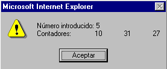

Para mostrar el enunciado de cada ejercicio haga click en su número
Haz un programa de nombre 2dawA.htm, que has de grabar en TuCarpeta que sirva para restar dos números cualesquiera, sean enteros o reales.
¿Qué sucede si en lugar de restar dos números, intentamos restar dos textos?
Haz un programa de nombre 2dawAB.htm, que demuestre el único caso en que podemos restar dos cadenas de texto.
Haz un programa de nombre 2dawB.htm, que has de grabar en TuCarpeta, que sirva para dividir dos números.
¿Qué sucede si en lugar de dividir dos números, intentamos dividir dos textos? ¿Qué sucede si el divisor es el número 0?
Haz un programa de nombre 2dawC.htm, que has de grabar en TuCarpeta, que funcione de la siguiente forma:
Haz un programa de nombre 2dawD.htm, que has de grabar en TuCarpeta, que funcione de la siguiente forma:
El siguiente programa tiene errores. Escríbelo (grábalo con el nombre 2dawE.htm en TuCarpeta) y corrígelo para que funcione y explica para qué sirve:
Código erróneo:
<HTML> <SCRIPT LANGUAGE="JavaScrip">
/* 2DAWE.HTM
var a,b;
a=prompt("Escribe la base:")
b=promp("Escribe la altura:")
alert("Área= "+(a*b/2);
</SCRIP>
</HTML>
Código corregido:
<HTML> <SCRIPT LANGUAGE="JavaScript">
/* 2DAWE.HTM */
var a,b;
a=prompt("Escribe la base:")
b=prompt("Escribe la altura:")
alert("Área= "+(a*b/2));
</SCRIPT>
</HTML>
Haciendo click en el texto puedes intercambiar entre el código erróneo y corregido.
Haz un programa de nombre 2dawF.htm, que has de grabar en TuCarpeta, que sirva para calcular la longitud de una circunferencia y el área del círculo correspondiente.
Haz un programa de nombre 2dawG.htm, que has de grabar en TuCarpeta, que funcione de la siguiente forma:
De forma que si introducimos el nº 5 debería aparecer:
Haz un programa de nombre 2dawH.htm, que has de grabar en TuCarpeta, que funcione de la siguiente forma:
Comprueba el programa para el número 52. Deberás calcular en primer lugar matemáticamente el valor de 52 en base 16 y en base 5.
Haz un programa de nombre 2dawI.htm, que has de grabar en TuCarpeta, que funcione de la siguiente forma:
Comprueba el programa para el número 65618. Deberás resolver en primer lugar el problema matemáticamente.
Haz un programa de nombre 2dawJ.htm, que has de grabar en TuCarpeta, que funcione de la siguiente forma:
El siguiente programa tiene errores. Escríbelo y corrígelo para que funcione (grábalo con el nombre 2dawK.htm en TuCarpeta):
Código erróneo:
<SCRIPT>
<HTML LANGUAGE="JavaScript"
// 2DAWA.HTM
var farenheit,celsius,
var s="";
for (i=-2;i<=12:i++)
{
celsius=10*i;
farenheit=32+(celsius*9)/5;
s=s+"C= "+celsius+" F= "+farenheit+"\n";
if (celsius==0) s=s+"Punto congelación del Agua\n";
if (celsius==100) s=s+"Punto de ebullición del Agua\n";
}
alert(s;
<//SCRIPT>
<HTML>
Código corregido:
<HTML>
<SCRIPT LANGUAGE="JavaScript">
// 2DAWA.HTM
var farenheit,celsius;
var s="";
for (i=-2;i<=12;i++)
{
celsius=10*i;
farenheit=32+(celsius*9)/5;
s=s+"C= "+celsius+" F= "+farenheit+"\n";
if (celsius==0) s=s+"Punto congelación del Agua\n";
if (celsius==100) s=s+"Punto de ebullición del Agua\n";
}
alert(s);
</SCRIPT>
</HTML>
Haciendo click en el texto puedes intercambiar entre el código erróneo y corregido.
Haz un programa que funcione de la siguiente forma:
Graba el programa con el nombre 2dawL.htm en TuCarpeta
Escribe un programa que nos vaya pidiendo números. Si escribimos el número 9999 se acaba; por último el programa nos da como resultado el número de números introducidos, exceptuando el 9999. Graba el programa con el nombre 2dawM.htm en TuCarpeta
Haz un programa que haga lo mismo que el anterior, pero además nos dé la suma de todos los números introducidos, exceptuando el 9999. Graba el programa con el nombre 2dawN.htm en TuCarpeta
Haz un programa que haga lo mismo que el anterior, pero además nos dé el producto de los números introducidos, exceptuando el 9999. Graba el programa con el nombre 2dawO.htm en TuCarpeta
Haz un programa que escriba todos los múltiplos de 23 inferiores a 1000 y por último nos dé la suma de todos ellos. Graba el programa con el nombre 2dawP.htm en TuCarpeta